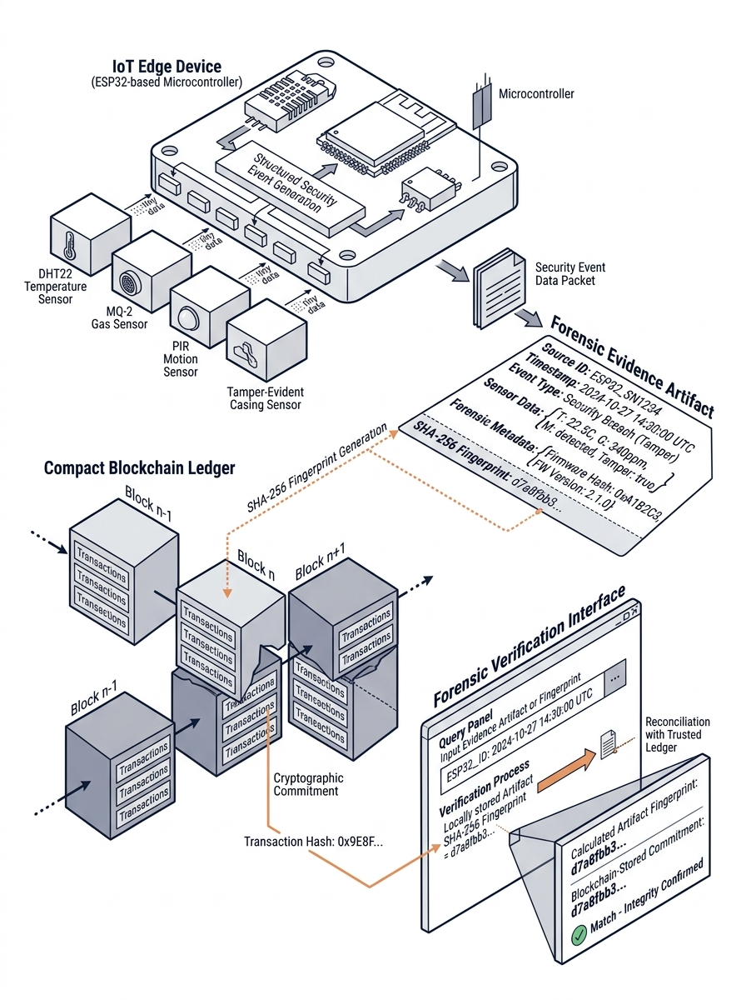

WOXSEN UNIVERSITY
School of Technology • Department of Computer Science & Engineering
CAPSTONE RESEARCH PROJECT
ChainForensics
Blockchain-Backed IoT Forensic Evidence Platform
An evidence platform that preserves security-relevant IoT events and independently verifies their integrity using a blockchain-backed cryptographic commitment.
IoT SECURITY × DIGITAL FORENSICS × BLOCKCHAIN
PROJECT RESEARCH TEAM
| # | NAME | PRIMARY RESPONSIBILITY |
|---|---|---|
| 01 | Erolla Rishvin Reddy | BLOCKCHAIN & ARCHITECTURE |
| 02 | Yogamruth Reddy Guggilla | IoT & EDGE SECURITY |
| 03 | Muppuri Chakradhar | DIGITAL FORENSICS & UI |
B.TECH CAPSTONE PROJECT • COMPUTER SCIENCE & ENGINEERING • ACADEMIC YEAR 2025–2026

CHAINFORENSICS
IoT security event → preserved evidence → independent integrity reference
01 / 25
Presentation Overview
PRESENTATION STRUCTURE 01 → 05
01
Problem & Motivation
02
Theory & Literature
03
CHAINFORENSICS DESIGN
Architecture • Evidence Pipeline • Verification
04
Implementation & Validation
05
Results & Conclusion
From problem definition to validated ChainForensics results.
02 / 25
The Problem: Can IoT Evidence Still Be Trusted After an Incident?
IoT Device
SENSOR TELEMETRY
Security Event
EVENT TRIGGERED
LOCAL LOG / DATABASE
EVENTEVT-00125
STATUSRECORDED
RECORDED EVIDENCE
NO INDEPENDENT REFERENCE
SYSTEM COMPROMISED
Forensic Threat Surface
| Threat | What can happen? | Forensic Concern |
|---|---|---|
| MODIFICATION | Recorded evidence can be changed after collection. | Compromises evidence integrity. Attackers can alter logs to manipulate the investigation narrative and hide malicious activity. |
| DELETION | Recorded evidence can be removed after collection. | Compromises evidence availability. Attackers can erase logs to create investigative blind spots, making reconstruction impossible. |
| REPLAY | Previously captured events can be reintroduced. | Compromises temporal authenticity. Attackers can re-inject old telemetry to spoof system states and bypass chronological security checks. |
Can the original evidence still be verified?
Why Existing IoT Logging Is Not Enough
CONVENTIONAL APPROACH
LIMITATION
FORENSIC REQUIREMENT
Local database / logs
Evidence remains dependent on the original system
Independent reference
Mutable records
Records may be changed after collection
Post-collection integrity verification
Centralized trust
Verification depends on the same trust domain
External verification path
Telemetry collection
Raw telemetry is not necessarily preserved as forensic evidence
Forensic evidence preservation
WHERE THE GAP APPEARS
EVENT RECORDED
→
SYSTEM COMPROMISED
→
RECORD QUESTIONED
HOW CAN THE PRESERVED RECORD BE VERIFIED LATER?
The research gap is the absence of an independent mechanism
for later verification of preserved IoT evidence.
for later verification of preserved IoT evidence.
IoT Security
Digital Forensics
Blockchain
CHAINFORENSICS
Internet of Things
Connected physical devices collect, communicate and exchange data with digital systems
01 / DEVICES & SENSORS
Sense the physical environment and generate data
Temperature
Motion
Humidity
Light
Physical world → Digital data
DATA CAPTURE
02 / GATEWAY / EDGE
Process, filter and forward device data
Local processing • Connectivity • Data forwarding
DATA TRANSPORT
03 / CLOUD / PLATFORM
Store, manage and analyze IoT data
Data storage • Processing • Analytics
DATA SERVICES
04 / APPLICATIONS & USERS
Consume IoT data through applications and services
Monitoring • Visualization • Decision support
WHAT DEFINES IoT?
CONNECTED
Physical devices communicate with digital systems.
SENSING
Sensors continuously capture information from the environment.
DATA EXCHANGE
Device data moves through communication and computing layers.
DISTRIBUTED
Devices, gateways, platforms and applications operate as interconnected components.
DEVICES & SENSORS
| Component | Role | Example |
|---|---|---|
| Device | Performs sensing/communication | ESP32 |
| Sensor | Captures physical condition | Temperature |
| Edge/Gateway | Processes and forwards data | Gateway |
CHAINFORENSICS MAPPING
Sensors
→
ESP32
→
MQTT
→
Evidence Gateway
Security-relevant telemetry → Structured security event
IoT Security: Where Can an Attack Occur?
IoT expands the attack surface across devices, communication channels and data infrastructure.
01 / DEVICE LAYER
ASSETS
- Device Identity
- Sensors
- Firmware
- Physical Interface
ATTACK VECTORS
- Device Spoofing
- Physical Tampering
- Firmware / State Tamper
IMPACT
Signal authenticity can be compromised.
02 / COMMUNICATION LAYER
ASSETS
- MQTT Messages
- Event Sequence
- Device Packets
ATTACK VECTORS
- Replay
- Message Manipulation
- Sequence Disruption
IMPACT
Transit integrity and event ordering can be disrupted.
03 / DATA / BACKEND LAYER
ASSETS
- Telemetry Database
- System Logs
- Audit Records
ATTACK VECTORS
- Record Modification
- Selective Deletion
- Timestamp Manipulation
IMPACT
Post-incident evidence can become difficult to verify.
CORE IoT SECURITY REQUIREMENTS
CONFIDENTIALITY
•
•
AVAILABILITY
•
IDENTITY
CHAINFORENSICS FOCUS
INTEGRITY
Integrity: detect unauthorized modification of records and evidence.
IoT Threat → Security Event → Evidence → Forensic Verification
Security controls protect the system; ChainForensics focuses on preserving and verifying the resulting security evidence.
06 / 25
Blockchain Fundamentals
A distributed ledger maintains an ordered, cryptographically linked history of committed data
WHAT IS BLOCKCHAIN?
A blockchain is a distributed ledger in which transactions are recorded into an ordered chain of blocks and protected through cryptographic mechanisms.
01 / TRANSACTION
DATA
eventId
type
value
timestamp
Committed data
→
02 / HASH
Input → Fixed-length digest
0x7f83b165...
One-way cryptographic fingerprint
→
03 / BLOCK N
BLOCK #1042
Previous Hash
0x91af...
Transaction / Data
0x7f83...
Merkle Root
0xa83c...
Timestamp
T
HASH LINK
Hash(Block N) →
Previous Hash(Block N+1)
Previous Hash(Block N+1)
Changing earlier block data changes its hash and breaks the expected linkage.
04 / BLOCK N+1
BLOCK #1043
Previous Hash
= Hash(Block N)
Transactions
...
Merkle Root
...
Timestamp
...
→
DISTRIBUTED LEDGER
NODE 01
NODE 02
NODE 03
Shared state across participating nodes
Consensus → agreement on accepted ledger state
01 / CRYPTOGRAPHIC HASH
Fixed-length digest derived from input data.
Mechanism: Integrity comparison
02 / BLOCK STRUCTURE
Groups transactions with ordering and metadata.
Mechanism: Hash-linked history
03 / DISTRIBUTED LEDGER
Maintains ledger state across participating nodes.
Mechanism: Independent distributed reference
04 / SMART CONTRACT
Programmatic logic executed by a blockchain network.
Mechanism: Deterministic evidence-registration rules
INPUT ↓ CONTRACT LOGIC ↓ STATE CHANGE
WHY THIS MATTERS FOR EVIDENCE
A blockchain does not need to contain the complete IoT evidence. A compact cryptographic commitment can serve as an independent reference against which preserved evidence can later be checked.
BLOCKCHAIN STORES
Cryptographic commitment
OFF-CHAIN SYSTEM STORES
Complete evidence payload
Evidence → Hash → Blockchain
Evidence → Preservation Storage
Blockchain provides a trusted historical reference for what was committed; it does not independently prove that the physical event occurred.
Evidence hash ≠ blockchain transaction hash
Evidence hash → fingerprint of the committed payload | Transaction hash → identifier for the blockchain transaction
Evidence hash → fingerprint of the committed payload | Transaction hash → identifier for the blockchain transaction
Digital Forensics
A structured process for identifying, preserving, examining and interpreting digital evidence
WHAT IS DIGITAL FORENSICS?
Digital forensics is the systematic identification, collection, preservation, examination, analysis and reporting of information from digital sources.
INTEGRITY
Evidence should remain consistent with its preserved state.
PROVENANCE
The origin and handling history of evidence should remain traceable.
CHAIN OF CUSTODY
Evidence handling and transitions should be documented throughout its lifecycle.
FORENSIC LIFECYCLE
01 / IDENTIFY
Scoping
Locate relevant evidence sources.
Devices • Communication • Storage
→
02 / COLLECT
Acquisition
Acquire relevant digital information while preserving the original state as far as practicable.
→
CHAINFORENSICS FOCUS
03 / PRESERVE
Evidence Protection
Protect evidence from alteration and maintain its provenance for later examination.
→
04 / EXAMINE
Inspection
Extract and inspect relevant evidence attributes.
Payload • Sequence • Timestamp
→
05 / ANALYZE
Correlation
Interpret evidence and correlate events, context and timelines.
Timeline • Context • Correlation
→
06 / REPORT
Findings
Document the examination and communicate the resulting findings.
Evidence may be collected at one point in time and examined later.
Preservation protects the relationship between the captured state and the state examined later.
EVIDENCE STATE TRANSFORMATION
Raw Digital Source
↓
Relevant Event
↓
Preserved Evidence
↓
Examination → Finding
Raw telemetry ≠ automatically forensic evidence
Relevant security event + contextual preservation → forensic evidence
Relevant security event + contextual preservation → forensic evidence
WHY THIS MATTERS IN IoT
Sensors
↓
Edge Device
↓
Communication
↓
Gateway → Backend → Digital Evidence
| Forensic Property | What it protects |
|---|---|
| Integrity | Consistency of preserved evidence |
| Provenance | Origin and handling history |
| Chain of Custody | Documented evidence transitions |
CHAINFORENSICS APPLICATION
IoT Event → Digital Evidence → Preservation → Integrity Verification
The forensic challenge is not only collecting an IoT event — it is preserving enough information to determine whether the evidence examined later corresponds to the evidence originally captured.
Literature Review
Existing research connects IoT forensics with blockchain, but approaches differ in evidence handling, scope and verification strategy
| STUDY / APPROACH | IoT | BLOCKCHAIN | FORENSICS | EVIDENCE FOCUS | KEY LIMITATION / SCOPE |
|---|---|---|---|---|---|
|
Ryu et al.
IoT DF Framework
|
✓ | ✓ | ✓ | Evidence management / chain of custody | Framework-oriented; broad IoT forensic architecture |
|
Kumar et al.
IoF • 2021
|
✓ | ✓ | ✓ | Case chain / evidence chain / custody | Transparency, distributed investigation and cross-border scenarios |
|
Akinbi et al.
SLR • 2022
|
✓ | ✓ | ✓ | Integrity / provenance / traceability / verification | Systematic review; not a single implemented platform |
|
Unified IoT DF
2023
|
✓ | ✓ | ✓ | Authenticity / integrity / privacy | Holistic platform; scalability and performance evaluation |
|
IIoT Blockchain DF
2024
|
✓ | ✓ | ✓ | Evidence storage / retrieval / tracing | Industrial IoT specialization; evidence acquisition focus |
Selected literature • 2021–2024 | DOIs: 10.1016/j.future.2021.02.016 • 10.1016/j.fsidi.2022.301470 • 10.1016/j.iot.2023.100968 • 10.1016/j.aej.2023.12.021
WHAT THE LITERATURE ALREADY ESTABLISHES
Blockchain can strengthen evidence integrity
→
Blockchain can support provenance and chain of custody
→
IoT forensics requires distributed evidence handling
REMAINING FOCUS
Independent verification of a preserved IoT evidence record
Existing Research → Evidence Protection
ChainForensics → Independent Evidence Verification
What Is Missing in Existing Approaches?
The research gap is not blockchain-based evidence protection itself—it is the specific verification path we implement
| CAPABILITY | EXISTING RESEARCH | CHAINFORENSICS | POSITIONING |
|---|---|---|---|
| IoT Evidence Collection | ✓ | ✓ | Structured security-event capture |
| Evidence Integrity | ✓ | ✓ | Deterministic evidence fingerprinting |
| Provenance / Chain of Custody | ✓ | ✓ | Explicit evidence provenance |
| Blockchain Evidence Anchoring | ✓ | ✓ | Compact cryptographic commitment |
| Independent Verification | Varies by framework and implementation | ✓ |
Preserved evidence ↔ external blockchain commitment
PRIMARY RESEARCH FOCUS
|
| Forensic Verdict | Varies by approach | ✓ | INTACT / ANOMALY / TAMPERED |
WHERE THE GAP REMAINS
PRESERVED EVIDENCE
The record available for later examination
RECONCILIATION
Recalculate and compare
HASH_LOCAL ↔ HASH_ANCHOR
TRUSTED REFERENCE
Externally maintained cryptographic commitment
Match → evidence remains consistent with the anchored state
|
Mismatch → cryptographic integrity divergence
Independent verification of a preserved IoT evidence record
The preserved evidence is reconstructed and compared against an externally maintained cryptographic commitment rather than relying only on the original storage system.
IoT Security + Digital Forensics + Blockchain
↓
Independent Evidence Verification
↓
ChainForensics
Scope: integrity and later verification of preserved security evidence
• 02 / PART 1 — THEORY
IoT Forensics & Evidence Integrity
IoT evidence must be preserved with sufficient integrity and provenance for reliable forensic verification
CORE PRINCIPLE
EVIDENTIARY THRESHOLD
“A security event becomes forensic evidence only when its provenance and integrity can be preserved and examined.”
Distributed Sources
Contextual Sealing
Reconcilable State
WHY IoT FORENSICS?
DISTRIBUTED EVIDENCE MODEL
IoT evidence is generated across multiple layers rather than originating from one static host.
01 SENSORSAnalog / digital signal transduction
↓
02 ESP32 / EDGEEphemeral buffer + device identity + sequence
↓
03 MQTT TRANSPORTTransit messages across network links
↓
04 GATEWAY NODEValidation + normalization + local handling
↓
05 BACKEND STORAGEPersistent evidence-related records
VOLATILEEdge buffers may disappear or be overwritten.
HETEROGENEOUSDifferent layers may represent the same event differently.
MULTI-HOPEvidence crosses several trust and transport boundaries.
FORENSIC IMPLICATION
IoT evidence requires end-to-end provenance rather than single-host trust.
THE FORENSIC SHIFT
EVENT → DIGITAL EVIDENCE
Raw telemetry is not automatically forensic evidence. Relevant events must retain sufficient context to be examined later.
SECURITY EVENT
IDEVT-00125
DEVICEESP32-NODE-001
SEQUENCE#125
SENSORMQ-2 Gas
READING712 ppm
TIMESTAMPT0
SEVERITYCRITICAL
RAW SECURITY EVENT
↓
PRESERVE + BIND CONTEXT
↓
DIGITAL EVIDENCE
{
"id": "EVT-00125",
"dev": "ESP32-NODE-001",
"seq": 125,
"gas_ppm": 712,
"sev": "CRITICAL"
}
Context transforms an isolated reading into an examinable security record.
WHAT MUST BE VERIFIED?
FORENSIC REQUIREMENTS
| PROPERTY | FORENSIC QUESTION |
|---|---|
| INTEGRITY | Has the preserved evidence changed? |
| PROVENANCE | Where did the evidence originate? |
| IDENTITY | Which device generated the event? |
| SEQUENCE | Is the event consistent with the expected order? |
| TIMING | Is the recorded temporal context coherent? |
| LIFECYCLE | Can the evidence path be reconstructed? |
PRESERVED STATE
↑↓
LATER EXAMINATION
MUST REMAIN RECONCILABLE
The forensic objective is to determine whether the evidence examined later remains consistent with the state preserved during collection.
CHAINFORENSICS APPLICATION
IoT Event → Digital Evidence → Preservation → Integrity Verification
THEORY → IMPLEMENTATION
• 03 / PART 1 → PART 2
From Theory to ChainForensics
The three domains converge around one requirement: preserve IoT security evidence so its integrity can be independently verified later
01 / INTERNET OF THINGS
ROLE: EVENT ORIGIN
OBSERVE THE PHYSICAL WORLD
Connected devices and sensors generate security-relevant telemetry.
Sensor → ESP32 → Security Event
Structured IoT Event
02 / IoT SECURITY
ROLE: SECURITY CONTEXT
DETECT SECURITY-RELEVANT CONDITIONS
Device, communication and backend layers introduce distinct attack surfaces and integrity risks.
Threat Condition → Detection → Security Event
Security-Relevant Evidence Candidate
03 / DIGITAL FORENSICS
ROLE: FORENSIC VERIFICATION
PRESERVE AND EXAMINE DIGITAL EVIDENCE
Evidence requires integrity, provenance and a reproducible examination path.
Collect → Preserve → Examine → Finding
Forensically Examined Record
04 / BLOCKCHAIN
ROLE: TRUSTED REFERENCE
MAINTAIN AN INDEPENDENT TRUSTED REFERENCE
A cryptographic commitment can be anchored in a distributed ledger and checked later.
Evidence Digest → Ledger Commitment → Later Check
Independent Cryptographic Reference
CHAINFORENSICS
BLOCKCHAIN-BACKED IoT FORENSIC EVIDENCE PLATFORM
Capture → Preserve → Anchor → Verify
Preserve a security-relevant IoT event and later reconcile the preserved evidence against an independently anchored cryptographic commitment.
01 CAPTURE
IoT security event
→
02 PRESERVE
Structured evidence record
→
03 ANCHOR
Cryptographic commitment
→
04 VERIFY
Independent reconciliation
WHAT BLOCKCHAIN CONTRIBUTES
Trusted reference for the committed evidence state
WHAT FORENSIC VERIFICATION CONTRIBUTES
Detection of divergence between preserved evidence and the trusted reference
| DOMAIN | REQUIREMENT | CHAINFORENSICS RESPONSE |
|---|---|---|
| IoT | Capture distributed physical-world events | Structured security-event generation |
| IoT Security | Protect / detect integrity-relevant conditions | Security event context |
| Digital Forensics | Preserve and examine evidence | Evidence provenance + verification |
| Blockchain | Provide independent trusted reference | Cryptographic evidence anchoring |
PRIMARY TECHNICAL FOCUS
Independent verification of preserved IoT security evidence
The system does not rely solely on the original storage environment to determine whether the preserved record remains consistent.
03 / PART 2 — PROJECT
ChainForensics — System Architecture
From IoT security-event generation to independent forensic verification
END-TO-END EVIDENCE ARCHITECTURE
01
IoT EDGE
ROLE
Generate security-relevant events
Generate security-relevant events
TECHNOLOGY
ESP32 • Sensors • Security Event Engine
ESP32 • Sensors • Security Event Engine
OUTPUT
Structured Security Event
Structured Security Event
→
02
EVIDENCE INGESTION
ROLE
Validate and create a deterministic evidence representation
Validate and create a deterministic evidence representation
TECHNOLOGY
Node.js / TypeScript
Zod • RFC 8785 • SHA-256
Node.js / TypeScript
Zod • RFC 8785 • SHA-256
OUTPUT
Evidence Digest
Evidence Digest
→
03
OFF-CHAIN PRESERVATION
ROLE
Store the complete evidence payload
Store the complete evidence payload
TECHNOLOGY
SQLite / Prisma
IPFS / Helia
SQLite / Prisma
IPFS / Helia
OUTPUT
Complete Evidence FULL PAYLOAD
Complete Evidence FULL PAYLOAD
Complete evidence remains off-chain; only the cryptographic commitment is anchored on-chain.
SEPARATE TRUST DOMAIN
04
ON-CHAIN TRUST ANCHOR
ROLE
Maintain an independent cryptographic reference
Maintain an independent cryptographic reference
TECHNOLOGY
Ethereum / Hardhat
EvidenceRegistry.sol
Ethereum / Hardhat
EvidenceRegistry.sol
OUTPUT
Evidence Hash Commitment
COMPACT REFERENCE • NOT COMPLETE EVIDENCE
Evidence Hash Commitment
COMPACT REFERENCE • NOT COMPLETE EVIDENCE
→
05
FORENSIC VERIFICATION
ROLE
Reconstruct preserved evidence and reconcile it with the trusted commitment
Reconstruct preserved evidence and reconcile it with the trusted commitment
PRESERVED EVIDENCE
↓
RECONSTRUCT
↓
HASH_LOCAL ↔ HASH_ANCHOR
INTACT |
ANOMALY |
TAMPERED
13 / 25
03 / PART 2 — PROJECT
IoT Edge Implementation
The ESP32 converts sensor conditions and physical security events into structured security records.
01 / PHYSICAL INPUTS
ESP32 MULTI-SENSOR EDGE
| SENSOR | PURPOSE | PIN |
|---|---|---|
| DHT22 | Temperature / humidity | GPIO 4 |
| MQ-2 | Gas / smoke | GPIO 34 |
| PIR | Motion | GPIO 27 |
| LDR | Light level | GPIO 32 |
| TAMPER | Enclosure state | GPIO 21 |
Tamper switch → enclosure-state security event
EDGE ROLE
Sense → evaluate → package security-relevant events
→
02 / EDGE PROCESSING
ESP32 + FreeRTOS
SENSOR TASK
↓
SECURITY ENGINE
↓
EVENT QUEUE
↓
MQTT DISPATCH
FreeRTOS separates sensing, event evaluation and network dispatch.
SECURITY EVENT RULES
| INPUT | CONDITION | EVENT |
|---|---|---|
| MQ-2 | > 450 ppm | GAS_SPIKE |
| PIR | HIGH • 22:00–06:00 | PERIMETER |
| TAMPER | OPEN | ENCLOSURE_OPEN |
→
03 / SECURITY EVENT
STRUCTURED EDGE OUTPUT
EVT-00125
DEVICEESP32-NODE-001
SEQUENCE125
TRIGGERGAS_SPIKE
SENSORMQ-2
READING712 ppm
SEVERITYCRITICAL
{
"id":"EVT-00125",
"dev":"ESP32-NODE-001",
"seq":125,
"type":"GAS_SPIKE",
"gas_ppm":712,
"sev":"CRITICAL"
}
Published via MQTT to the evidence gateway.
TELEMETRY ≠ FORENSIC EVIDENCE
Routine sensor readings provide telemetry; security-relevant conditions are transformed into structured events for downstream evidence processing.
EDGE OUTPUT → MQTT → EVIDENCE GATEWAY
QoS 1 •
iot/security/events14 / 24
• PART 2 — PROJECT
Evidence Ingestion & Canonicalization
The gateway validates security events, creates a deterministic representation, and prepares the evidence fingerprint.
EVIDENCE INGESTION PIPELINE
01 / RECEIVE
MQTT
iot/security/events
QoS 1
QoS 1
Security event received from ESP32 edge
→
02 / VALIDATE
Zod Schema
Required fields
Types
Value ranges
Types
Value ranges
Invalid input → reject
→
03 / CANONICALIZE
RFC 8785 JCS
Deterministic
canonical bytes
canonical bytes
Same valid input → same canonical representation
→
04 / FINGERPRINT
SHA-256
256 bits
32 bytes
32 bytes
EVIDENCE HASH
0xa8f913...c724
→
05 / RECORD
EVT-00125
HASH 0xa8f9...
CID bafybeic...
CID bafybeic...
Structured evidence metadata
WHY CANONICALIZATION MATTERS
Equivalent JSON can have different byte representations. RFC 8785 JCS provides a standardized canonical representation so the same valid input is serialized consistently before hashing.
SEMANTICALLY EQUIVALENT INPUT
→
RFC 8785 JCS
→
CANONICAL BYTES
→
SHA-256
VALIDATED EVENT → CANONICAL REPRESENTATION → EVIDENCE FINGERPRINT
15 / 24
• PART 2 — PROJECT
Evidence Ingestion & Cryptographic Fingerprinting
A validated event is canonicalized and fingerprinted with SHA-256 before evidence preservation and anchoring.
VALIDATE → CANONICALIZE → HASH → PRESERVE / ANCHOR
01 / EVIDENCE PROCESSING
VALIDATED EVENT
EVT-00125
ESP32-NODE-001
GAS_SPIKE
712 ppm
CRITICAL
↓
RFC 8785 JCS
Deterministic canonical representation
↓
SHA-256
↓
EVIDENCE HASH
0xa8f913...c724
02 / DIGEST DIVERGENCE
ORIGINAL
gas_ppm = 712
↓
a8f913...
≠
MODIFIED
gas_ppm = 120
↓
91d2e7...
One changed field produces a different SHA-256 digest.
The hash fingerprints the evidence representation; it is not the evidence itself.
CANONICAL EVIDENCE → SHA-256 FINGERPRINT → READY FOR TRUST ANCHOR
16 / 24
• PART 2 — PROJECT
Evidence Preservation & Provenance
Complete evidence is preserved off-chain while provenance and a separate blockchain commitment support later verification.
GENERATE → PRESERVE → ANCHOR → VERIFY
01 / EVIDENCE PRESERVATION
Complete Evidence
The full canonical evidence payload remains off-chain.
EVT-00125
↓
SQLite / Prisma + IPFS / Helia
↓
Preserved Payload
SQLite / Prisma
Metadata + retrieval context
Metadata + retrieval context
IPFS / Helia
Content-addressed evidence payload
Content-addressed evidence payload
02 / PROVENANCE RECORD
Evidence IDEVT-00125
Device IDESP32-NODE-001
Sequence125
Timestamp1788912000
Evidence Hash0xa8f913…c724
Content CIDbafybeic…9x2
03 / TRUST SEPARATION
OFF-CHAIN
Complete evidence
IPFS / Helia
IPFS / Helia
Separate trust domain
→
ON-CHAIN
evidenceHashBlockchain
PROVENANCE ≠ BLOCKCHAIN
Provenance records the origin and handling context of evidence; blockchain provides an independent cryptographic reference for a committed state.
Provenance records the origin and handling context of evidence; blockchain provides an independent cryptographic reference for a committed state.
PRESERVE THE EVIDENCE — SEPARATE THE TRUST REFERENCE
17 / 24
• PART 2 — PROJECT
Blockchain Evidence Anchoring
A compact cryptographic commitment is registered on-chain for later forensic verification.
ANCHOR THE COMMITMENT — NOT THE COMPLETE EVIDENCE
Complete evidence remains off-chain; the blockchain stores the cryptographic commitment.
ANCHORING PIPELINE
01 / EVIDENCE
EVT-00125
Complete evidence
remains off-chain
remains off-chain
IPFS / Helia
+
SQLite / Prisma
+
SQLite / Prisma
→
02 / COMMITMENT
SHA-256
↓
32-BYTE DIGEST
↓
0xa8f913…c724
Fingerprint of the canonical evidence representation
→
03 / SMART CONTRACT
EvidenceRegistry.sol
↓
registerEvidence(...)
↓
evidenceHash
Ethereum / EVM
COMMITMENT REGISTERED
Duplicate registration rejected
→
04 / BLOCKCHAIN STATE
Transaction
↓
Block
↓
Contract State
↓
HASH_ANCHOR
Local EVM testbed
ON-CHAIN COMMITMENT — EVT-00125
evidenceHash
0xa8f913…c724
isRegistered
true
metadataCid
bafybeic…9x2
timestamp
1788912000
IMPORTANT: EVIDENCE HASH ≠ TRANSACTION HASH
Evidence hash → fingerprints evidence |
Tx hash → identifies blockchain transaction
Forensic reconciliation compares the reconstructed evidence hash with
evidenceHash stored in contract state.OFF-CHAIN: Complete evidence → IPFS / Helia • Metadata → SQLite / Prisma
ON-CHAIN: Evidence commitment → Blockchain
BLOCKCHAIN STORES THE COMMITMENT — FORENSIC VERIFICATION USES IT AS AN EXTERNAL REFERENCE
18 / 24
• 03 / PART 2 — PROJECT
How Is Evidence Verified Later?
Preserved evidence is reconstructed locally and reconciled with the trusted blockchain commitment.
Independent verification = local reconstruction + external commitment reference
01 / LOCAL RECONSTRUCTION
SQLite / Prisma
+
IPFS / Helia
↓
Evidence retrieval
↓
RFC 8785
↓
SHA-256
↓
HASH_LOCAL
RECONSTRUCT
→
02 / ON-CHAIN REFERENCE
EvidenceRegistry.sol
Evidence ID
↓
getEvidence(id)
↓
EvidenceRecord
↓
evidenceHash
↓
HASH_ANCHOR
RETRIEVE
→
03 / CRYPTOGRAPHIC RECONCILIATION
HASH_LOCAL
↕
HASH_ANCHOR
MATCH → RECONCILED
DIFFER → DIVERGENCE
EVT-00125 | HASH_LOCAL = HASH_ANCHOR
04 / SEVEN-DIMENSION FORENSIC EVALUATION
01 Schema Integrity
02 Device Identity
03 Sequence Integrity
04 Temporal Consistency
05 Payload Hash
06 IPFS CID Resolution
07 Blockchain Anchor
Structural/contextual checks + cryptographic checks
FORENSIC INTERPRETATION
HASH MATCH → evidence reconciles with the trusted commitment
HASH MISMATCH → TAMPERED
RPC UNAVAILABLE → ANOMALY
NO ANCHOR → UNANCHORED
A contextual deviation does not automatically establish evidence tampering.
THE BLOCKCHAIN PROVIDES THE REFERENCE — THE FORENSIC VERIFIER PERFORMS THE RECONCILIATION
19 / 24
• PART 2 — PROJECT
From Verification to Forensic Finding
Verification findings are evaluated through cryptographic and contextual checks to determine the evidence status.
THE VERDICT DEPENDS ON THE TYPE OF DEVIATION
Cryptographic divergence → TAMPERED | Contextual deviation → ANOMALY
DECISION HIERARCHY
VERIFY
ANCHOR
ANCHOR
→
COMPARE
HASH
HASH
→
HASH_LOCAL ↔ HASH_ANCHOR
DIFFER
↓
TAMPERED
MATCH
↓
CONTEXT CHECK
DEVIATION
↓
ANOMALY
CLEAN
↓
INTACT
PRIMARY FORENSIC FINDINGS
| INTACT | Hash reconciles + contextual checks clean |
| ANOMALY | Contextual deviation / infrastructure unavailable |
| TAMPERED | Cryptographic divergence / anchored record mismatch |
Cryptographic divergence determines the primary tampering finding.
SPECIAL VERIFICATION STATES
UNANCHORED
No external commitment → independent reconciliation unavailable.
No external commitment → independent reconciliation unavailable.
RPC_UNAVAILABLE
Reference cannot be evaluated → ANOMALY
Reference cannot be evaluated → ANOMALY
Neither state is equivalent to TAMPERED.
THE VERIFIER DECIDES — THE BLOCKCHAIN SUPPLIES THE REFERENCE
20 / 24
• PART 2 — PROJECT
Threat Scenarios Tested
Nine controlled testbed scenarios evaluate forensic responses to tampering, anomalies and isolation conditions.
9 EXECUTED VALIDATION SCENARIOS
| # | SCENARIO | TEST CONDITION | VERIFICATION SIGNAL | FINDING | RESULT |
|---|---|---|---|---|---|
| 01 | Clean Evidence | Nominal event; record unchanged | Required checks + hash reconciliation | INTACT | PASS |
| 02 | Database Modification HERO SCENARIO |
Gas telemetry changed: 712 → 120 ppm | Recalculated SHA-256 vs trusted anchor | TAMPERED | PASS |
| 03 | Evidence Deletion | Anchor remains; local evidence absent | External commitment remains; expected evidence absent | TAMPERED | PASS |
| 04 | Anchor Divergence | Local evidence does not reconcile with anchor | HASH_LOCAL ≠ HASH_ANCHOR |
TAMPERED | PASS |
| 05 | Replay Attack | Previously captured event re-injected | Sequence / temporal checks | ANOMALY | PASS |
| 06 | Sequence Manipulation | Sequence discontinuity / rollback | Monotonic sequence analysis | ANOMALY | PASS |
| 07 | Device Spoofing | Unauthorized device attempts ingress | Device identity validation | ANOMALY | PASS |
| 08 | Blockchain / RPC Failure | Blockchain reference unavailable during verification | Hardhat RPC unavailable / timeout | ANOMALY | PASS |
| 09 | Cross-Device Isolation | Device attempts access outside its evidence scope | Access-control / isolation check | ISOLATED / ACCESS BLOCKED | PASS |
9 SCENARIOS · 1 INTACT · 3 TAMPERED · 4 ANOMALY · 1 ISOLATED
Operational anomaly ≠ cryptographic integrity divergence. |
RPC failure affects verification availability; it does not establish evidence tampering.
Scope: Results demonstrate implemented rules for executed testbed scenarios; they do not establish universal attack detection.
Scope: Results demonstrate implemented rules for executed testbed scenarios; they do not establish universal attack detection.
ALL 9 EXECUTED SCENARIOS MATCHED THEIR EXPECTED IMPLEMENTED OUTCOME
21 / 25
• PART F — VALIDATION / DEMONSTRATION
Tampering Demonstration
A post-collection modification changes the reconstructed evidence hash and breaks reconciliation with the trusted commitment.
SCENARIO — Administrator modifies the recorded gas value after the evidence was anchored.
01 / ORIGINAL EVIDENCE
ANCHORED
EVT-00125
ESP32-NODE-001
MQ-2
712 ppm
CRITICAL
↓
HASH_ANCHOR
0xa8f913...c724
Trusted blockchain commitment
02 / LOCAL MODIFICATION
712 ppm
↓
120 ppm
Δ −592 ppm
UPDATE events
SET gas_ppm = 120, severity = 'NOMINAL'
WHERE id = 'EVT-00125';
SET gas_ppm = 120, severity = 'NOMINAL'
WHERE id = 'EVT-00125';
DATABASE RECORD CHANGED
Post-collection local record is modified; the external commitment remains unchanged.
03 / FORENSIC RECHECK
RECONSTRUCT
↓
SHA-256
↓
↓
SHA-256
↓
HASH_LOCAL
0x91d2e7...4af1
≠
HASH_ANCHOR
0xa8f913...c724
TAMPERED
Evidence no longer reconciles with the trusted commitment.
ROLE SEPARATION
BLOCKCHAIN → supplies
FORENSIC VERIFIER → recomputes
HASH_ANCHORFORENSIC VERIFIER → recomputes
HASH_LOCAL and detects divergence
The verifier detects the divergence — not the blockchain alone.
Integrity ≠ Attribution: The mismatch establishes cryptographic divergence; it does not identify who performed the modification.
ORIGINAL COMMITMENT REMAINS UNCHANGED → LOCAL EVIDENCE DIVERGES
22 / 25
• PART F — VALIDATION / DEMONSTRATION
Implementation & Validation Results
The implemented pipeline was validated through unit, integration, security-isolation, and forensic scenario testing.
89 / 89
UNIT TESTS
Canonicalization, schemas, hashing & core logic
PASS
25 / 25
INTEGRATION TESTS
MQTT → ingestion → IPFS → blockchain
PASS
TASK #19
SECURITY & ISOLATION AUDIT
Security-boundary and architectural isolation
PASS
INDEPENDENT
FORENSIC VERIFICATION
Independent of the local tamper-audit log
VALIDATED
EXECUTED FORENSIC SCENARIOS
9 executed scenarios
9 executed scenarios
1 INTACT • 3 TAMPERED • 4 ANOMALY • 1 ISOLATED
| SCENARIO | FINDING | RESULT |
|---|---|---|
| Clean Evidence | INTACT | PASS |
| Database Modification | TAMPERED | PASS |
| Evidence Deletion | TAMPERED | PASS |
| Anchor Divergence | TAMPERED | PASS |
| Replay Attack | ANOMALY | PASS |
| Sequence Manipulation | ANOMALY | PASS |
| Device Spoofing | ANOMALY | PASS |
| Blockchain / RPC Failure | ANOMALY | PASS |
| Cross-Device Isolation | ISOLATED / ACCESS BLOCKED | PASS |
All 9 executed scenarios produced the expected implemented classification or isolation outcome.
KEY VALIDATION FINDING
Database modifications were detected independently of the local tamper-audit log.
The verifier reconstructed the evidence, recomputed
HASH_LOCAL, retrieved HASH_ANCHOR, and detected cryptographic divergence.FORENSIC INDEPENDENCE
Verdict generation does not rely on
TamperAuditLog as source of truth.
Scope: Results demonstrate implemented rules for executed testbed scenarios; they do not establish universal attack detection.
23 / 25
• PART G — CONCLUSION
Contribution & Future Direction
ChainForensics connects IoT security-event capture, evidence preservation and blockchain-backed forensic verification.
01 / CONTRIBUTION
01 — Independent Verification
Reconstruct preserved evidence and reconcile
HASH_LOCAL with the trusted HASH_ANCHOR.02 — Evidence Preservation
Preserve the complete evidence payload off-chain with provenance and content reference.
03 — Blockchain Commitment
Use a compact cryptographic commitment as an independent historical reference.
04 — Forensic Verdict Logic
Classify verification outcomes as INTACT, ANOMALY or TAMPERED.
UNANCHORED is handled as a special verification state.
UNANCHORED is handled as a special verification state.
02 / LIMITATIONS
01 — Testbed Scope
Validation covers the implemented ChainForensics testbed and executed scenarios.
02 — Sensor Environment
The prototype uses a defined ESP32 sensor configuration rather than diverse real-world deployments.
03 — Local Blockchain
Blockchain validation uses a Hardhat local EVM rather than a production network.
04 — Attack Coverage
Executed scenarios demonstrate implemented rules; they do not establish universal attack detection.
03 / FUTURE WORK
01 — Distributed Deployment
Evaluate multiple IoT nodes, gateways and distributed evidence collectors.
02 — Hardware-Backed Identity
Extend device assurance using hardware-backed credentials or trusted execution mechanisms.
03 — Scalable Evidence Infrastructure
Evaluate scalable content-addressed storage and blockchain anchoring for larger evidence volumes.
04 — Advanced Forensic Analytics
Extend rule-based verification with richer temporal, behavioral and anomaly analysis.
CORE CONTRIBUTION
ChainForensics provides an end-to-end mechanism for preserving security-relevant IoT events and independently verifying whether reconstructed evidence remains consistent with its trusted blockchain commitment.
Blockchain supplies the external commitment reference; the forensic verifier performs reconciliation and determines the finding.
FROM “RECORDED” TO “INDEPENDENTLY VERIFIABLE.”
24 / 25
CHAINFORENSICS
Thank You
Blockchain-Backed IoT Forensic Evidence Platform
IoT Security × Digital Forensics × Blockchain
IoT Event → Digital Evidence → Trusted Commitment → Verification
Questions & Discussion
Woxsen University
School of Technology